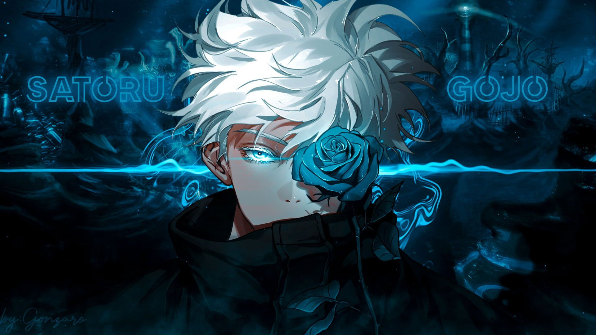
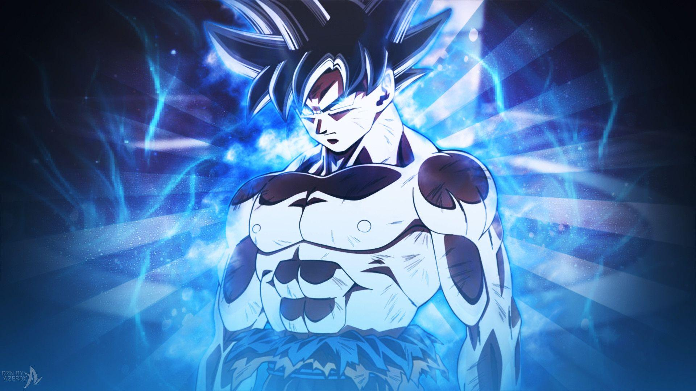
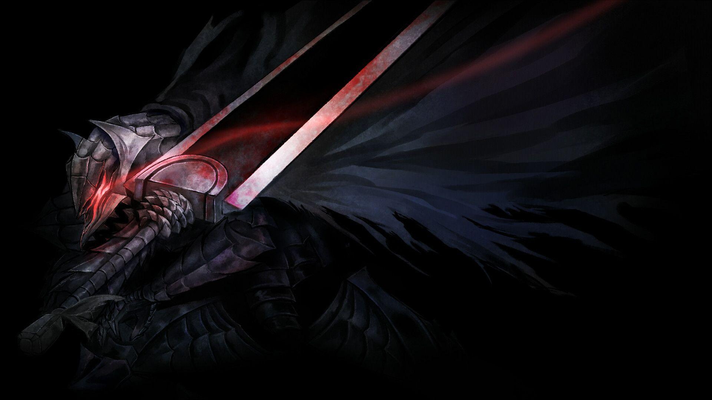
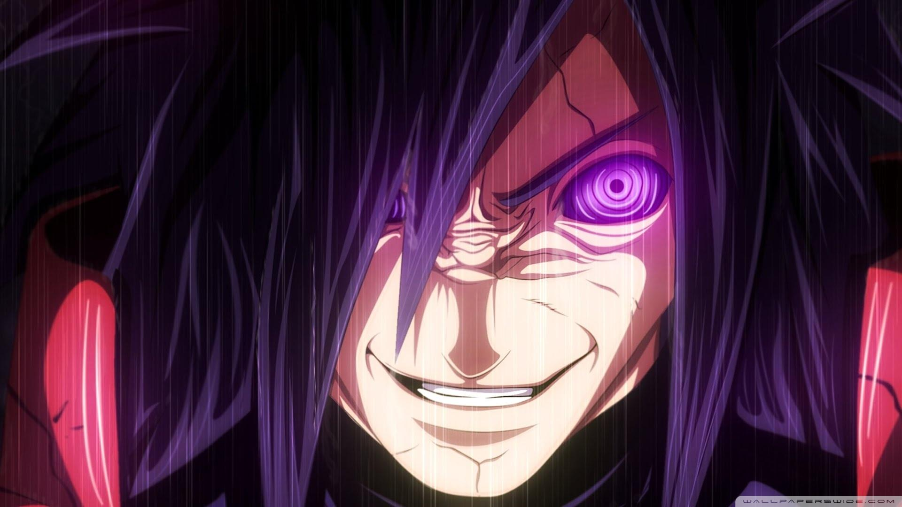
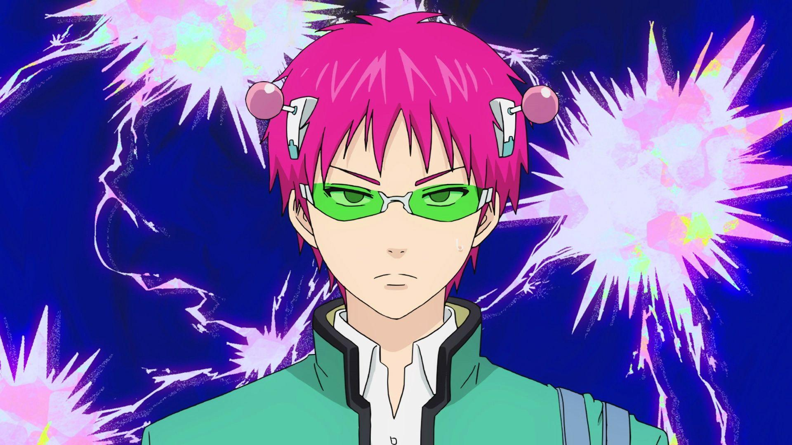
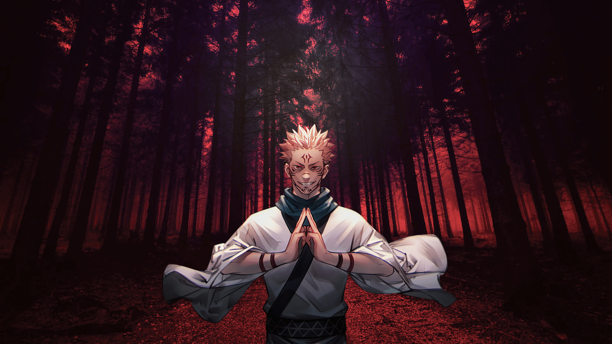
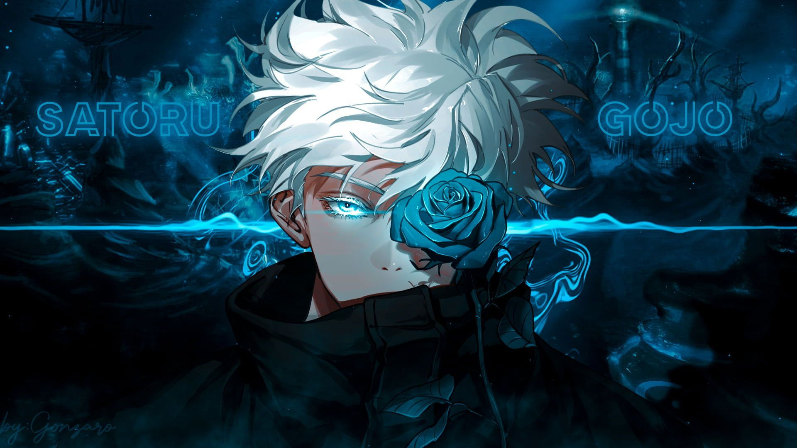
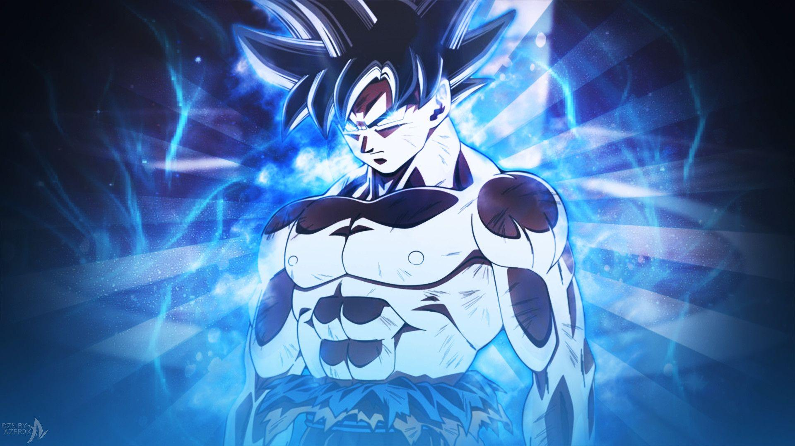
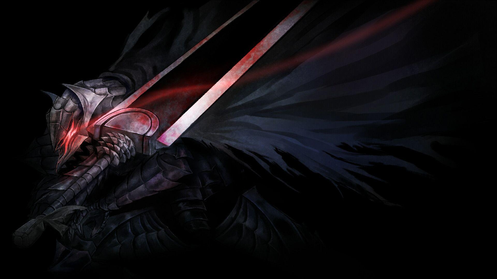
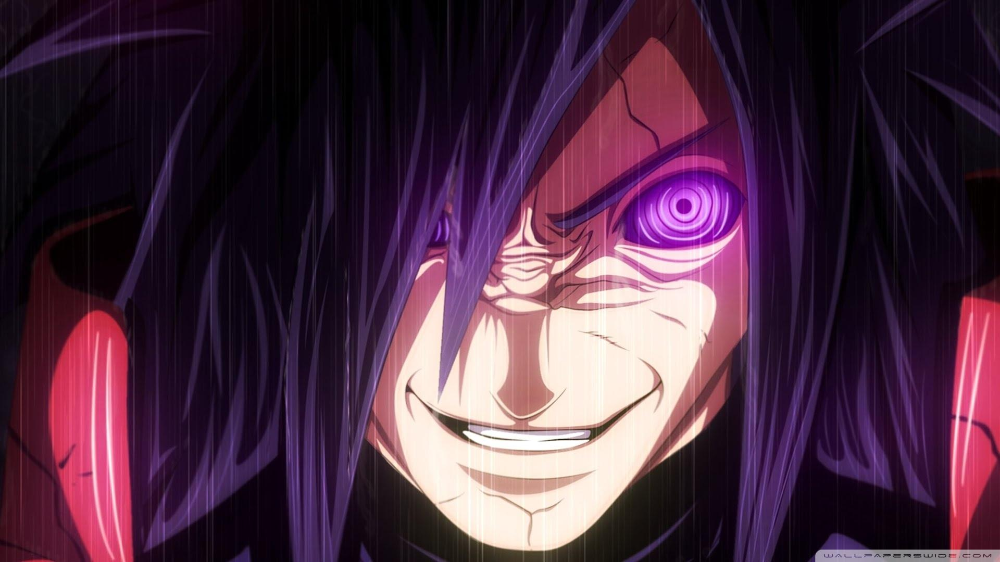
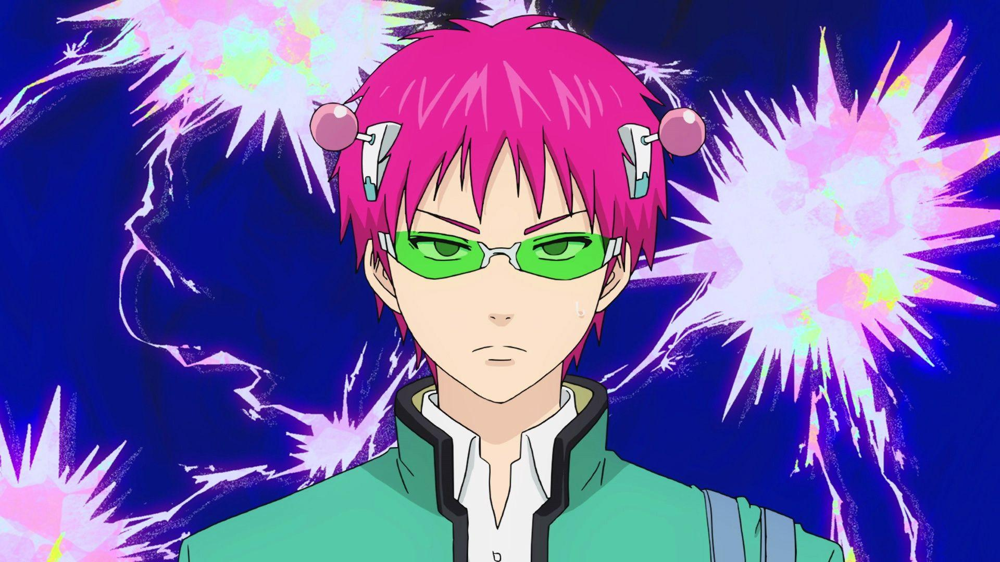
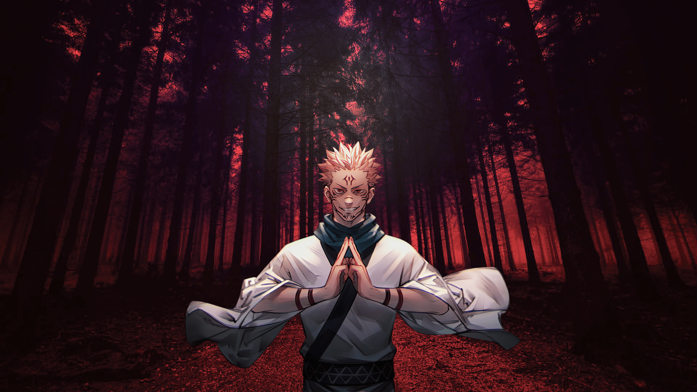
Sung Jin-Woo
Sung Jin-Woo. Inicialmente,ele é conhecido como o caçador mais fraco do mundo,classificado como E-Rank No entanto,sua vida muda drasticamente quando ele é escolhido pelo “Sistema”,Com essa nova habilidade, Jin-Woo pode aumentar sua força sem limites Eventualmente,ele se torna o caçador mais poderoso
Gojou Satoru
Gojou Satoru. Ele é um feiticeiro jujutsu de Grau Especial, conhecido como o mais poderoso do mundo.Ele possui habilidades extraordinárias, como o “Limitless” e os “Six Eyes”, que lhe conferem um controle quase absoluto sobre a energia amaldiçoada
Son Goku
Son Goku. Também conhecido como Kakarotto,Ele é um Saiyajin enviado à Terra ainda bebê,Goku é conhecido por sua força incrível, habilidades de luta e espírito indomável. Ele constantemente busca se tornar mais forte, enfrentando inimigos poderosos
Guts
Guts. Conhecido como o Espadachim Negro, ele é um ex-mercenário que teve uma infância traumática,cresceu em um ambiente de constante violência1.Conhecido por sua força sobre-humana, habilidades excepcionais com a espada
Madara Uchiha
Madara Uchiha. Ele foi o lendário líder do clã Uchiha,Madara é conhecido por suas habilidades excepcionais,incluindo o Sharingan, Mangekyō Sharingan Eterno, e o Rinnegan. Ele também foi capaz de usar o Estilo Madeira e se tornou o Jinchūriki do Dez-Caudas
Kusuo Saiki
Kusuo Saiki. Ele nasceu com uma vasta gama de poderes psíquicos,incluindo telepatia,telecinese mteletransporte e muitos outros, Para controlar seus poderes,Kusuo usa duas antenas rosas na cabeça, que foram criadas por seu irmão Ele também usa óculos verder para evitar transformar as pessoas em pedra
Ryomen Sukuna
Ryomen Sukuna. Conhecido como o Rei das Maldições, ele foi um poderoso feiticeiro de jujutsu que viveu há mais de mil anos Sukuna era tão forte que, mesmo após sua morte, seu corpo não pôde ser destruído. Em vez disso, seus 20 dedos foram selados como objetos amaldiçoados